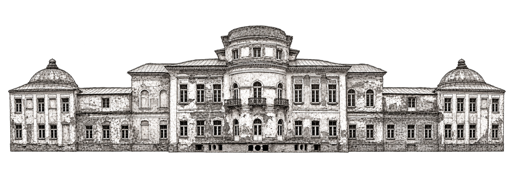
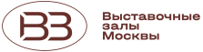
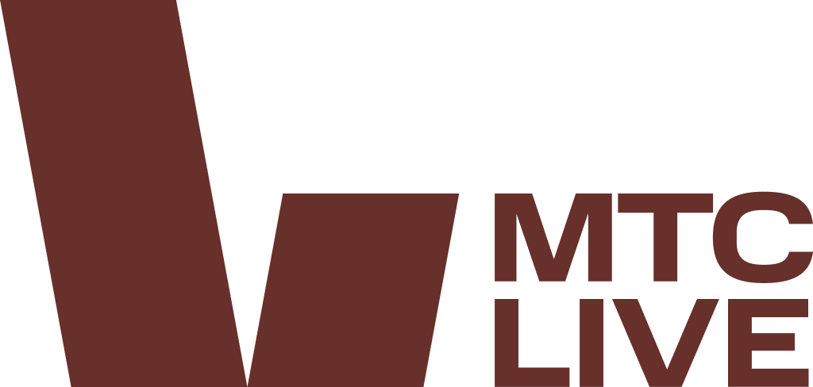
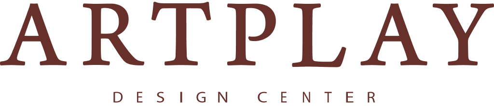
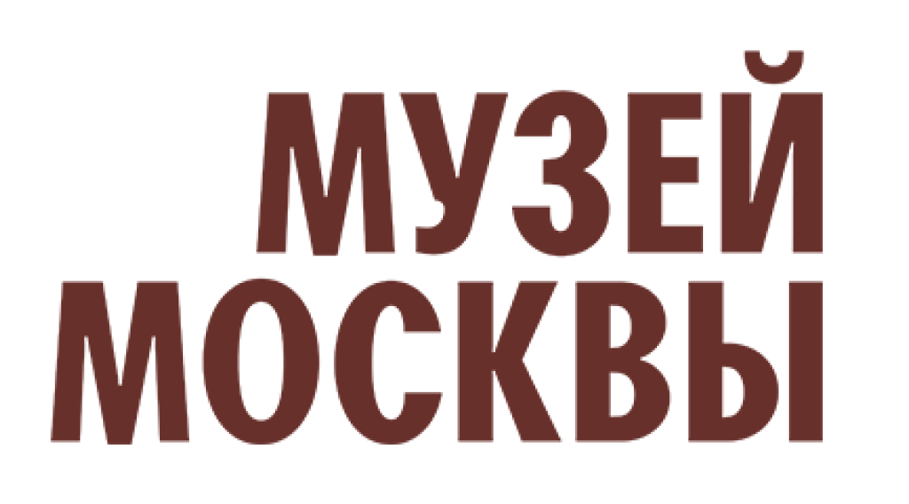
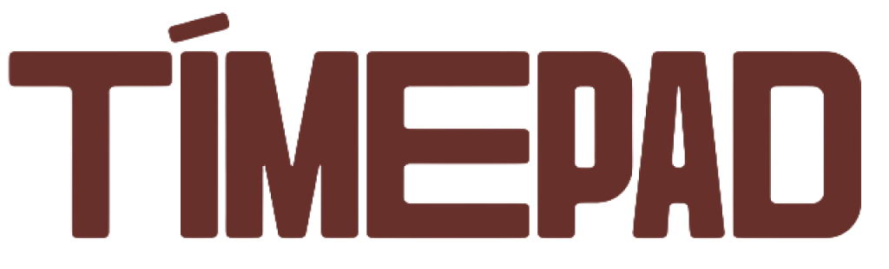
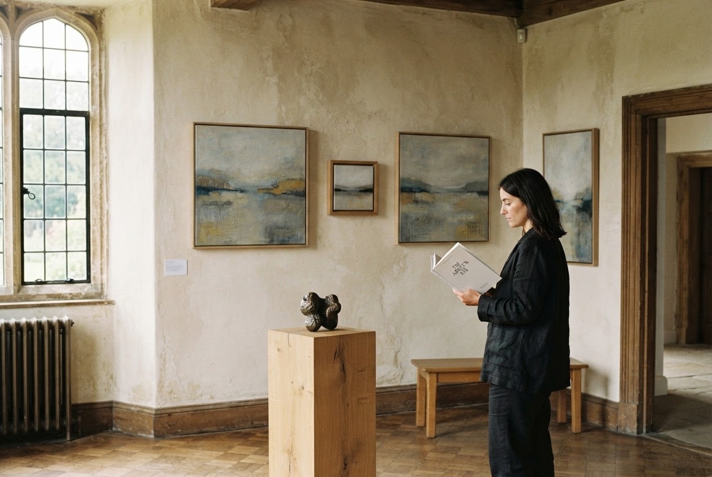

Художники
Работать над проектом, исследовать место и представить результат.
Обсудить участие


В исторической усадьбе «Михайловское»











О РЕЗИДЕНЦИИ

«Михайловское» — арт-резиденция в исторической усадьбе в Троицке. Здесь художники работают, исследуют место и делятся своими находками.
Для гостей — выставки, открытые мастерские и встречи с художниками. Можно познакомиться с современной художественной практикой и увидеть, как рождается искусство.
Четыре способа стать частью творческой жизни резиденции
Работать над проектом, исследовать место и представить результат.
Обсудить участиеУвидеть работу мастерских и познакомиться с практикой резидентов.
Задать вопросОбсудить совместную программу, исследование или профессиональную встречу.
Предложить проектПосетить выставку, открытую мастерскую или прогулку по усадьбе.
Выбрать событиеУсловия поездки согласуются индивидуально до приезда.

Комната и доступные даты фиксируются до приезда.
Пространство подбирается под формат и материалы проекта.
Питание, оборудование и особенности среды обсуждаются заранее.
Даты, стоимость и состав поддержки подтверждает команда резиденции.
Запросить условия↗Выберите подходящий сценарий — для работы или для посещения.
В заявке укажите практику, задачу и желаемые даты.
Подать заявку↗Выберите выставку, мастерскую или прогулку. Для части событий нужна запись.
Смотреть программу↓
Близлежащие усадьбы и природный заповедник.
Записаться ↗Архитектура, история места и остановки для наблюдения за ландшафтом. Автобусная и пешая части, старт в Михайловском.

Небольшие группы и работа с выбранным материалом.
Записаться ↗Предварительная запись в группы к художникам резиденции. Тема и материалы публикуются вместе с датой встречи.
Работы резидентов и приглашённых авторов.
Билеты ↗Анонсы выставок размещаются на сайте и в культурных календарях Москвы и Московской области.

Рисунок, живопись, графика и скульптура.
Подать заявку ↗Занятия с приглашёнными преподавателями. Проживание и питание включены в программу.

Практика, мастер-классы и события для учебных групп.
Обсудить ↗Проводится по договору с художественными образовательными организациями. Проживание и питание включены.

Мастер-класс приглашённого художника на открытом воздухе.
Собрать группу ↗Формат и продолжительность подбираются для частной группы. Материалы и уровень подготовки согласуются заранее.

Продажа произведений, встречи с авторами и аукционы.
Участие ↗Отобранные работы резидентов выставляются на продажу. Площадка также принимает заявки художников на участие.
УСЛОВИЯ ДЛЯ ПРАКТИКИ
Сосредоточенная работа над проектом в подходящей мастерской.
История усадьбы и территория как материал для исследования.
Обсуждение процесса и формат встречи со зрителем.
Подготовьте заявку,
чтобы обсудить детали визита.
Троицк, Новая Москва
Историческая усадьба «Михайловское»
Точный адрес, точка въезда и рабочие контакты команды будут опубликованы после подтверждения.
Укажите, хотите ли вы приехать как резидент, гость, студент или партнёр проекта.
Для посещения некоторых событий нужна предварительная запись.